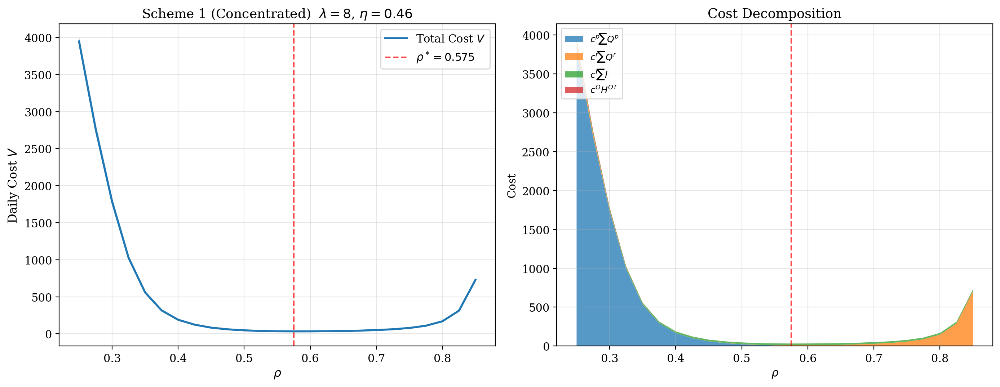
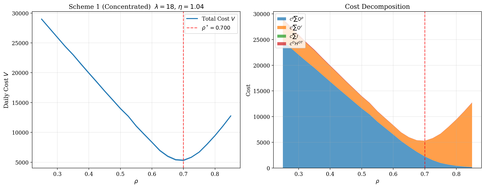
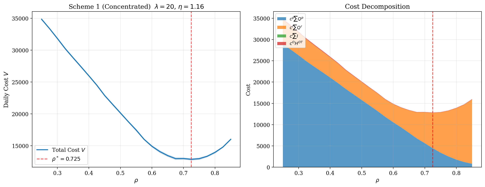

初诊与复诊插入顺序优化研究
本次汇报主要说明研究背景、当前阶段进展、现有仿真结论，以及下一步拟与医院共同推进的工作内容。
汇报主要内容
研究在解决什么问题
说明为什么首诊与复诊的接诊顺序值得单独研究，以及这项研究对应的门诊管理问题是什么。
目前已经做到了哪一步
概述已完成的数据观察、仿真建模和阶段性结果，说明目前已经得到了哪些可以解释的结论。
下一步还需要医院补什么
明确后续最需要医院协助确认的数据、管理目标和成本权重，为继续推进医院版本做准备。
着重体现目前已经形成的认识和后续门诊管理可能带来的价值
门诊运行中真实存在的接诊顺序问题
- 不同科室、不同时间段的患者量并不均匀，门诊运行天然存在峰谷差异。
- 部分患者初诊后还需要检查检验和再次就诊，因此今天的初诊会影响后续复诊压力。
- 门诊管理中真正紧张的是同一位医生有限的服务时间，而不是单纯的初诊数量问题。
如果只看当天初诊人数，容易低估真实工作量；门诊实际承受的压力还包括前几天初诊后再次回诊的患者。


目前已完成的工作
门诊现象观察
已从现有数据中识别患者量分布、候诊高峰和时段差异，为后续研究提供现实问题基础。
机制模型搭建
已完成单医生门诊、首诊触发复诊、不同插入顺序设置以及两种次日复诊安排方式的核心仿真框架。
基准与敏感性结果
已比较不同患者量、不同等待侧重点和不同复诊回流窗口下的结果，形成第一版规律性判断。
医院版本校准
下一步需将通用参数替换为医院真实数据，重点包括高峰量、回流规律和成本权重。
到目前为止，仿真已经能解释一些门诊现象，但要把它真正变成可执行的管理规则，还需要结合医院和科室的真实数据继续校准。
目前这项研究讨论的范围和前提
单医生门诊场景
当前先聚焦单个医生的门诊接诊流程，目的是先把首诊与复诊之间的基本机制看清楚。
复诊由首诊触发
部分首诊患者在完成检查检验后需要再次就诊，因此今天的首诊会转化成后续的复诊压力。
次日回诊是当前重点
本轮主要讨论检查结果能在第二天返回的情形，因此重点比较次日复诊应如何安排。
按固定插入规则比较
当前不是直接讨论医生自由调整，而是先比较不同首诊和复诊插入顺序会带来什么差异。
这轮仿真主要比较三件事
患者量水平
比较低负荷到高负荷场景，观察门诊忙闲变化对接诊顺序设置的影响。
首诊与复诊插入顺序
这里的比例本质上表示首诊与复诊的插入顺序，例如 2/3 可理解为平均接诊 2 位首诊后插入 1 位复诊。
次日复诊安排方式
比较延期复诊集中安排与分散安排两种方式在不同场景下的运行差异。
负荷越高，最优的初复诊插入顺序越要向初诊侧右移
三条曲线都有内部谷底，说明顺序不能长期只偏向一侧；负荷越高，谷底越往右，说明门诊越忙，就越要先满足初诊患者就诊需求 。
患者数量少，系统还有缓冲

患者人数接近满负荷，需要调整插队顺序

患者人数高负荷，先防初诊端失守

这页真正给医院的不是一个固定比例，而是一条更可靠的判断：先看当天负荷，再决定接诊顺序应该更均衡，还是更偏向优先稳住初诊端。
复诊回流方式决定拥堵出现的时点
早晨出现回流高峰
集中回流不是全天都更忙，而是把延期复诊会在次日最早几个时段进入，抬高晨峰。对门诊现场来说，最先被打乱的是分诊、解释沟通和开诊节奏。

把峰值削平，但可能把尾段拖长
Scheme 2 的优势是削弱晨峰，但它并不是“无条件更优”。当患者数量较多时，会把压力平摊到各个时段，最后会加长医生的工作时间。

对医院更有用的判断 不同的科室对应患者病症不同，不同患者复诊回流规律不同，我们需要详细分析各个科室真实场景中患者的回流情况，不同的情况下医院的初诊放号规则需要进行相应调整。
高负荷下，先看关键因素如何推着 optimal rho 变化
修改参数，观察 optimal rho 的变化方向
这里不是给出精确数值，而是把当前仿真已经确认的方向关系做成可交互展示。
图中会突出这个因素的变化方向，其余参数按下面控件固定。
图中只表达方向关系：患者总量和初诊优先权重升高时，optimal rho 倾向右移；复诊率和回流更集中时，optimal rho 倾向左移。
按科室、医生、出诊单元统计日内到诊量和高峰区间，把 λ 从仿真参数变成真实的门诊负荷层级。
利用患者 ID 串联首诊、检查检验和后续回诊记录，分科室估计真实复诊率 φ，而不是继续使用统一假设。
结合后续调研情况，判断各科室更想优先保护首诊接入，还是更强调复诊连续性。
测算从检查完成到复诊预约、再到实际到诊的时间分布，提取各科室的回流节奏 δ 和“晨峰型/拖尾型”标签。
下一步不是继续展示更多仿真图，而是把 λ、φ、δ 和等待优先目标逐步替换成真实医疗数据，再按科室重新校准顺序规则。到那一步，optimal rho 才会从“方向判断”变成“本科室可执行的参考范围”。
简单说，当前仿真已经帮我们找出了“该看哪些变量”；下一步真实数据工作，就是把这些参数的实际分布与取值。
不同情景下会出现什么现象，对应怎样管理
超负荷场景
现象：大多数时段两类患者都在排队问诊，需要详细思考到底应该如何调节初诊放号量以及插入复诊患者规则
近临界场景
现象：顺序稍调一点，等待和加班就会明显变化。
高负荷 + 集中回流
现象：次日晨峰被抬高，早段最先拥堵。
高负荷 + 分散回流
现象：早高峰缓一些，但中后段压力拉长。
- 分科室、分医生统计日内到诊量和高峰区间，把患者总量 λ 做成真实负荷分层。
- 串联首诊、检查检验和回诊记录，估计不同科室的真实复诊率 φ。
- 测算检查完成到复诊预约、再到实际到诊的时间分布，提取回流节奏 δ。
提出插队规则的可行性与局限性
- 当下医院的规则的可行条件：当患者量基本满负荷、复诊率较平稳、次日回流不集中时，沿用当前规则通常是稳妥的，医院不需要频繁改规则。
- 引发插队矛盾的情景：当门诊量超负荷、复诊率上升、或者次日复诊患者在早段集中回流时，原有规则可能不再稳健，需要提前调整初诊放号量和插入节奏。
- 失效以后代价：晨峰更乱、护士分诊压力更大、初诊排队更长、初复诊问诊矛盾增大、医生加班更明显。
- 根据医院科室的真实情况，哪些科室可以继续沿用、哪些需要单独改：负荷平稳、回流较均匀的科室可以继续用经验规则；高复诊率、晨峰型、拖尾型或日波动大的科室，需要单独校准放号和插诊规则。
当前仿真在于提出：什么条件下采用什么插队规则
当前仿真已经告诉我们哪些因素最关键；下一步真实数据工作的重点，就是把这些因素从统一假设替换成各科室真实分布，再形成更可执行的门诊规则。
成本调研、参数标定与应用推进
访谈对象
建议覆盖出诊医生、护士或分诊人员、门诊管理者，以及患者服务相关人员。
重点问题
重点了解哪类患者更不能等待、加班与空闲哪个更难接受，以及哪些时段最难管理。
调研方式
建议采用半结构访谈与短问卷排序相结合的方式，先获得相对轻重顺序，再逐步做定量化。
初诊与复诊等待权重
将“谁更不能等”的管理判断转化为相对权重，而不是一开始就追求精确货币化。
加班与空闲的容忍边界
将门诊实际最难接受的加班程度和空档程度转化为相对管理权重。
科室级差异标签
区分更怕晨峰的科室和更怕后段延长压力的科室，为后续科室级建模做准备。
成本调研的关键不是先做一份很长的问卷，而是先帮助医院明确不同等待和加班情形的相对管理代价。
最终目标不是给出一个固定比例，而是形成按科室、按负荷分层的接诊规则，尽量减少不必要加班，同时兼顾首诊和复诊体验。